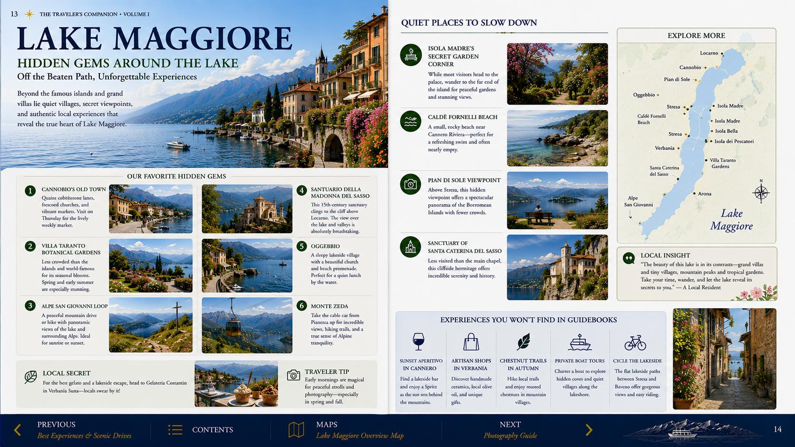

No hotel parking
The confirmation states that guest parking is unavailable. Return the rental car before check-in or use a separately confirmed garage.
Hotel Berna, one excellent evening, and a calm departure for Milan Linate on KLM.
Via Napo Torriani 18, beside Milano Centrale. Your two rooms are in the Berna Tower annex across the street from the main hotel.

The annex detail matters: reception and breakfast arrangements may involve crossing Via Napo Torriani.
Expected arrival listed as 3–4 PM.
Your airport departure will be earlier.
Berna Tower, across the street.
Required at check-in.
The confirmation states that guest parking is unavailable. Return the rental car before check-in or use a separately confirmed garage.
€10 per person for the night was listed as payable separately: €40 total for four guests.
Breakfast, Wi-Fi, individual air conditioning and complimentary soft drinks in the minibar are included.
Your request for nearby or adjoining rooms is recorded but remains subject to availability.
After a long journey, the best plan is a focused city experience followed by an early return to the hotel.

Taxi or Metro to the Duomo, walk through the Galleria, then continue to Brera for dinner. Return before the evening becomes a second travel day.

Walk toward Porta Nuova and Piazza Gae Aulenti, enjoy aperitivo and dinner, then return to Hotel Berna on foot or by a short taxi.
Hotel Berna’s Centrale location gives you both rail and car options. Verify your airline terminal and the operating timetable the evening before; do not rely on an old screenshot.
For a morning international flight, leave enough margin for the transfer, terminal navigation, bag drop and security. For this Linate departure, a pre-booked car is the simplest option; Metro M4 is a practical backup after confirming the morning schedule.